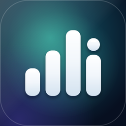

Masareef: Automatic Expense Tracker
مصاريف
Know where your money went.
العربية
مصاريف
Know where your money went.
العربيةMost money apps make you type in every purchase, and after a week you stop. Masareef is a fast, private expense tracker and budget planner that turns your bank's payment alerts into transactions on your device.
Card payments, transfers, top-ups, ATM withdrawals and income, each to the right wallet. Free includes 25 automatic captures a month; Masareef Pro lifts the cap.
Reads alerts from 1,200+ banks, wallets and payment apps. It never asks for your banking password.
Cash, bank accounts and mobile wallets side by side, in any country and currency.
Per-category budgets, a monthly target and a cash flow view that shows whether your balance lasts to payday.
Say or type it in Arabic or English: "spent 250 coffee" posts instantly.
Masareef is free to start, with 25 automatic captures a month. Masareef Pro lifts the cap.
No. It never asks for your banking password, and it is not affiliated with any bank or wallet.
Masareef is on Google Play for Android and on the App Store for iPhone.
Free to start · No ads · Works offline once you sign in
Supported banks · Privacy policy